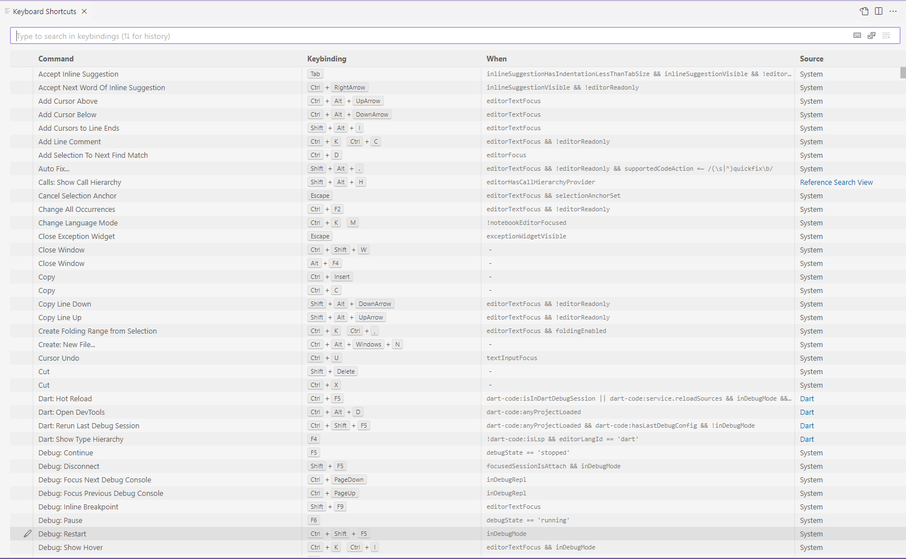
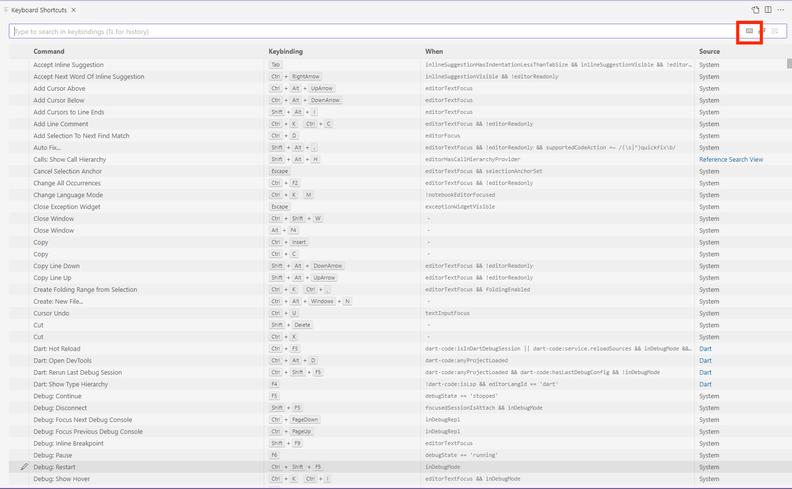
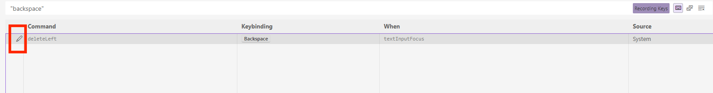
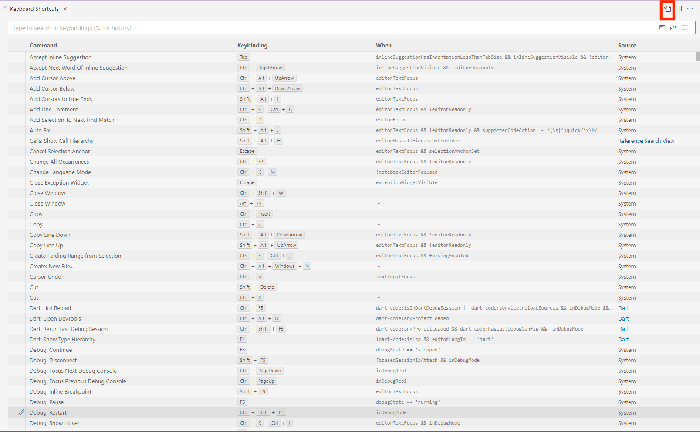
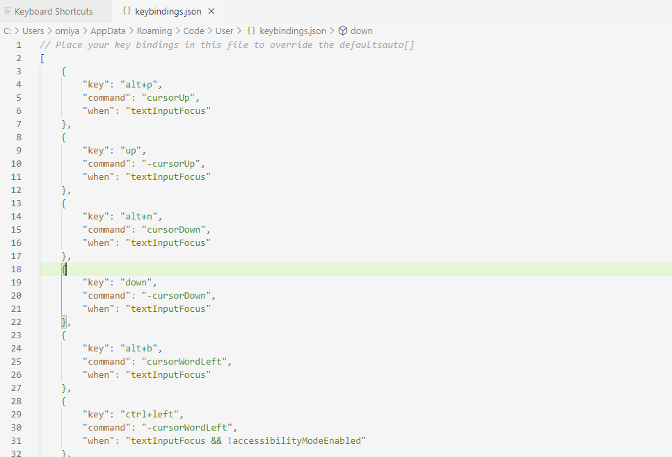

Setting Custom Key Bindings
Overview
These instructions detail how to bind keys to keyboard commands. There are two methods for setting custom key bindings. The first method is more convenient but is harder to use for complex key bindings. In those cases, you should use the second method, which allows for maximum customization by editing key bindings directly from a JSON file that is loaded by VS Code.
Method 1: Keyboard Shortcuts Editor
1. From the File menu, click Preferences and then click Keyboard Shortcuts.  This will take you to the keyboard shortcuts editor.
2. Search for the key command you want to change by entering the key command's name into the search bar at the top of the editor.
Note: For a more convenient option, you can also click the Record Keys icon (highlighted in red below) on the right hand side of the search bar.

The Record Keys option allows you to record key strokes typed into the search bar and search for key commands that are currently bound to those entered key(s).
3. Hover over the key command you want to change and click the pencil icon that appears on the left.  This allows you to edit the current key binding.
4. Enter your desired key binding combination in the popup that appears and press enter. The pressed key(s) are now bound to the key command.
Method 2: JSON File
1. From the File menu, click Preferences and then click Keyboard Shortcuts. This will take you to the keyboard shortcuts editor.
2. Click the Open Keyboard Shortcuts(JSON) icon from the top right of the shortcut editor. 
3. Add your own key bindings in JSON format into the keybindings.json file tab that appears in your editor. 
4. Add your key command bindings in the JSON format below.
{
"key": "ctrl+p",
"command": "deleteLeft",
"when": "textInputFocus"
}
In this format, key will take the key you want to bind, command will take the command identifier of the command that the key triggers, and when sets the scope of the key binding while in VS Code and is optional (the default is global editor scope).
5. Save and close the JSON file. The key bindings you set can now be used within the editor.
Conclusion
You have learned how to set your own key bindings in VS Code. Take a look at some of the other instruction sections to further improve your productivity in VS Code.